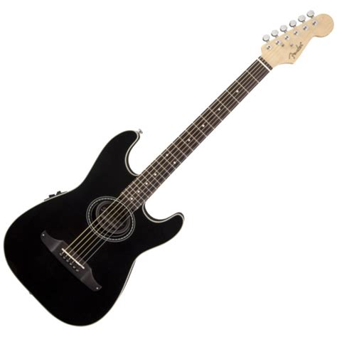

От рок гитаристов, до джаз музыкантов, прототипы гитары можно найти везде. От азиатских домбр и русских балалаек, до европейских видов гитар. Похоже что струнные инструменты просто покорили наши сердца и все еще остаются частью нашей жизни. И в правду, без гитар, музыка была бы совершенно иная. Один из самых недавно изобретенных видов гитар - это электрогитара. Её истоки идут от 30-ых готов 20-го столетия.
Первый магнитный звукосниматель в 1924 году сконструировал Ллойд Лоэр, инженер-изобретатель, работавший в компании Gibson. Первые электрогитары для массового рынка произвела в 1931 году Electro String Company, образованная Полом Бартом, Жоржем Бошамом и Адольфом Рикенбакером: будучи сделанными из алюминия, эти инструменты получили от музыкантов любовное прозвище «frying pans» («сковородки»).
Фактически применение звукоснимателей в джаз-бэндах 1930—1940-х годов привело к целой революции в музыкальной сфере в середине века. Оказалось, что искажения звука, первоначально рассматривавшиеся как брак, могут порождать бесконечное количество ранее неведомых тембров. После этого электрическая гитара на несколько десятилетий стала важнейшим инструментом нескольких новых жанров — от гитарного попа до тяжёлых форм метала и нойз-рока. Звукоснимателей может быть установлено как один или два, так и три.
О том, кто из гитаристов первым перешёл из акустики в «электричество», до сих пор идут споры. Основной претендент на роль пионера — Лес Пол, утверждавший, что именно он начал экспериментировать в этой области в начале 1920-х годов. Согласно архивному каталогу компании RCA Victor, 22 февраля 1933 года коллектив Noelani Hawaiian Orchestra записал около десятка песен с использованием электрической steel-гитары, четыре из которых были выпущены двумя пластинками: эту дату журнал Guitar Player считает официальным днём рождения электрического гитарного звука.